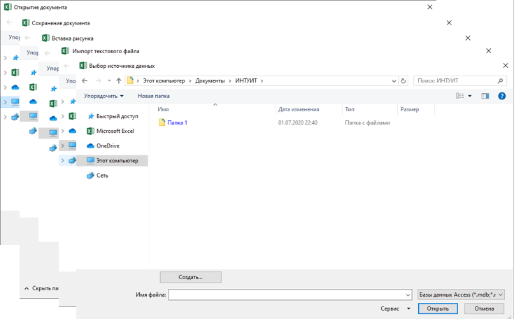
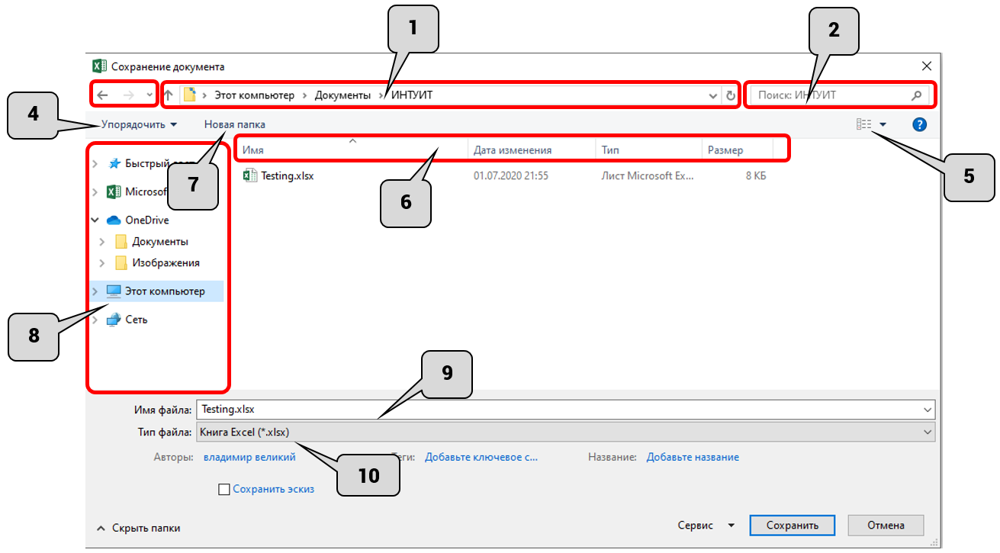
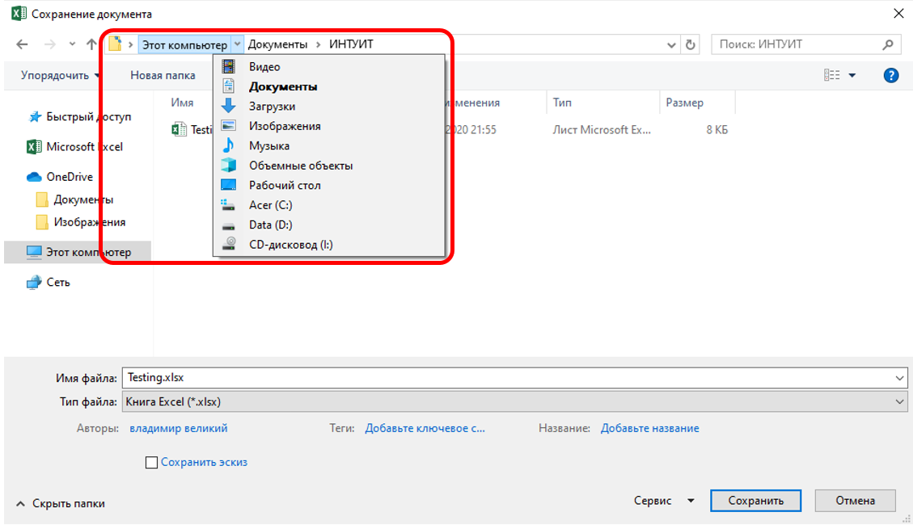
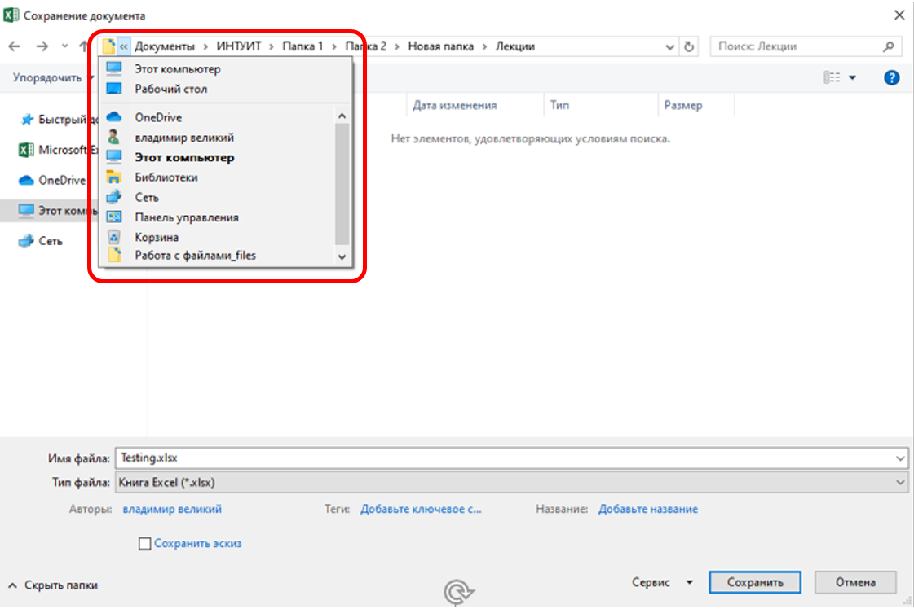

О файлах Microsoft Office Excel 2019
В Microsoft Office 2019 используется формат файлов, основанный на языке XML. По умолчанию документы, создаваемые в Excel 2019, сохраняются с новым расширением имени файла, которое получается путем добавления суффикса " x " или " m " к расширению xls. Суффикс " x " указывает на то, что XML-файл не содержит макросов, а суффикс " m " – что XML-файл макросы содержит. Таким образом, имена обычных файлов Excel 2019 имеют расширение xlsx, а не xls.
XML-форматы предоставляют целый ряд преимуществ – не только для разработчиков и создаваемых ими продуктов, но также для отдельных пользователей и организаций.
Файлы автоматически сжимаются, и в некоторых случаях их размер может сокращаться на 75 процентов по сравнению со старыми файлами xls.
Такой формат обеспечивает улучшенное восстановление поврежденных файлов. Файлы построены по модульному принципу, при котором разные компоненты данных хранятся в файле отдельно друг от друга. Это позволяет открывать файлы даже при разрушении или повреждении какого-либо компонента файла (например, диаграммы или таблицы).
Обеспечивается более легкое обнаружение документов, содержащих макросы. Файлы, которые сохраняются с расширением xlsx, не могут содержать макросы, написанные на языке VBA (Visual Basic для приложений) или элементы управления ActiveX, следовательно, в них отсутствует угроза безопасности, связанная с такого рода внедренными кодами. Только файлы, с расширением xlsm могут содержать макросы на языке VBA и элементы управления ActiveX, хранящиеся в обособленных частях файла. Различные расширения имен файлов позволяют легко отличать файлы, содержащие макрос, от файлов, которые его не содержат, и облегчают обнаружение антивирусными программами файлов, содержащих потенциально опасный код. Кроме того, системные администраторы могут заблокировать документы, содержащие нежелательные макросы или элементы управления, что повышает безопасность открытия документов.
Следует отметить, что файлы таких форматов недоступны для работы с версиями Excel старее Excel 2007. Для того чтобы можно было открывать и изменять файлы в более ранних версиях, в них следует загрузить необходимые конвертеры файлов.
Окна для работы с файловой системой в Excel 2019
Многочисленные окна для работы с файловой системой в Excel 2007, выглядят примерно одинаково. Внешний вид этих окон зависит от операционной системы. Некоторые из окон при работе в операционной системе Windows 10 показаны на рис. 2.1.

Рис. 2.1. Окна для работы с файловой системой
Размер окна можно изменить перетаскиванием его границ. При уменьшении размера окна могут скрываться некоторые его элементы.
В верхней части окна в поле с раскрывающимся списком (1 на рис. 2.2) отображается имя текущей папки и имя (имена) вышерасположенных папок. Например, на рис. 2.2 текущей папкой является папка ИНТУИТ, которая расположена в папке Документы.

Рис. 2.2. Элементы окна для работы с файловой системой
Для перехода в вышерасположенную папку достаточно щелкнуть по ее имени. Если щелкнуть по стрелке справа от имени папки, будет отображен список всех содержащихся в ней папок (рис. 2.3). Для перехода в нужную папку достаточно щелкнуть по ее имени.

Рис. 2.3. Просмотр списка и переход в вышерасположенные папки
Если щелкнуть по двойной стрелке в левой части поля, будет отображен список вышерасположенных папок и специальных папок Windows, если путь к текущей папке слишком длинный (рис. 2.4). Для перехода в нужную папку достаточно щелкнуть по ее имени.

Рис. 2.4. Просмотр списка и переход в вышерасположенные и системные папки